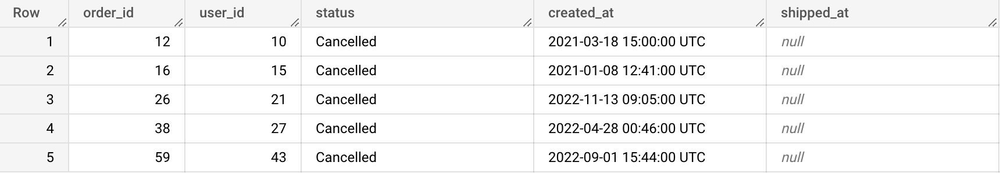
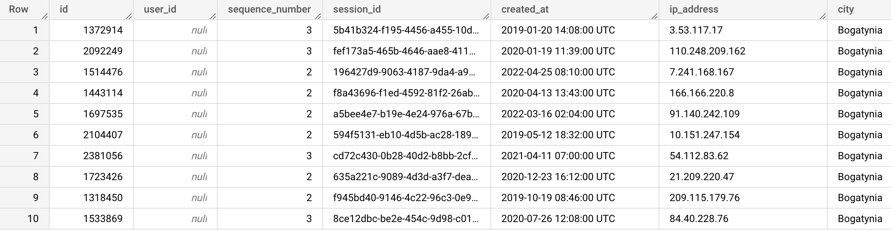

NULL is a special entity that means that there’s no value, not even an empty string. It means there's nothing in there.
Let's think about buildings (🏢) and elevators (🛗). We ask how many people are in a particular building's elevator. There could be five people (people_in_elevator = 5), ten people (people_in_elevator = 10), or even zero people. Zero means the elevator is empty but it's still a value (people_in_elevator = 0). Now, what if the building has no elevators? Since the building's elevator does not exist, there are not even zero people in it. In SQL, this nonexistence is represented
by NULL (people_in_elevator IS NULL).
We can not compare NULL using the regular operators. We need special syntax and functions to handle NULL. To check for NULL in a column, we use IS NULL.
Type the query below in the BigQuery console and run it. Don't copy paste. 😉
SELECT order_id, user_id, status, created_at, shipped_at
FROM bigquery-public-data.thelook_ecommerce.orders
WHERE shipped_at IS NULL
LIMIT 5;
Example results:

{% include practice_problems_intructions.html %}bigquery-public-data.thelook_ecommerce.events
Write a query that shows up to 10 events that we can not attribute to any users.

SELECT id, user_id, sequence_number, session_id, created_at, ip_address, city
FROM bigquery-public-data.thelook_ecommerce.events
WHERE user_id IS NULL
LIMIT 10;